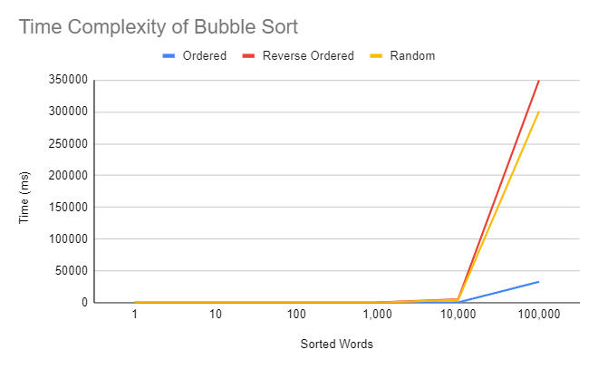
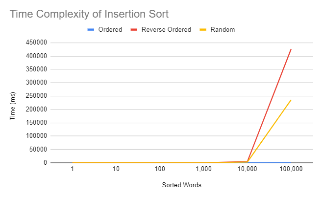
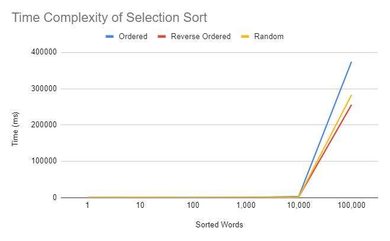

|
|
Optimal Sorting
Group Members: Oliver, Ayaan, Tejasvi, Cameron
Github!
Spread Sheet of Data!
Summary of Data!
Sorting Analysis
Bubble Sort Repo
Insertion Sort Repo
Selection Sort Repo
Sort Analysis Data
Sort Analysis Summary
Sorting Process
Background
To start the process, I first created files with varying orders and numbers of words. The orders consisted of an ordered file, a reverse ordered file, and a random ordered file. To create these orders, I ran the command lines: "cat /usr/share/dict/words | sort | head -n 1 | > ordered-10e0.txt", "cat /usr/share/dict/words | sort --reverse | head -n 1 | > reverse-ordered-10e0.txt", and "cat /usr/share/dict/words | sort --random-sort | head -n 1 | > random-10e0.txt" Inputting a different number with the "head" function each time I wanted more or less words, for example, "head -n 10" would put 10 words in the file, while "head -n 10000" would put 10,000 words in the file.
Using these files, I was able to test each of my sorting algorithms(Bubble Sort, Inserstion Sort, and Selection Sort) with different arders and amounts of words in each test. I was able to do this using the line: "time cat txt/ordered-10e0.txt | swift main.swift > /dev/null" to check how long it takes to run each of my algorithms.
Files
For the Sorting Analysis process to begin, I needed to create a few files to test. The files that I used included:
ordered-10e0.txt
ordered-10e1.txt
ordered-10e2.txt
ordered-10e3.txt
ordered-10e4.txt
ordered-10e5.txt
reverse-ordered-10e0.txt
reverse-ordered-10e1.txt
reverse-ordered-10e2.txt
reverse-ordered-10e3.txt
reverse-ordered-10e4.txt
reverse-ordered-10e5.txt
random-10e0.txt
random-10e1.txt
random-10e2.txt
random-10e3.txt
random-10e4.txt
random-10e5.txt
Time Complexity
All 3 sorting algorithms time complexities are O(n^2), meaning that as the amount of words in the array increases, the time increases exponentially. So, when there is a smaller amount of words, for example 100 words, the sorting algorithms will perform these very fast, however, if the algorithm is testing 100,000 words, the time it would take for the function to complete itself would be much larger than the 100 words, coming in at an average of over 5 minutes(with the exception of the already ordered list) in each of the 3 algorithms compared to the meer seconds of the 100 words.
Bubble Sort
Bubble sort functions by traversing through an array and comparing terms that are next to each other, only swapping terms if the term with the earlier index is larger than the next index. This comparing and swapping repeats itself until the end of the array and then the entire array is traversed repeatedly until the array is finally sorted. This leads to bubble sort being consistently the slowest of the sorting algorithms because of its need to constantly repeat the traversing of the array. The time complexity of bubble sort in a list that needs to be sorted is O(n^2) similar to most other sorting algorithms. However, in bubble sort, if the array is already ordered like it is in any of the ordered text files, then the time complexity will be O(n) because bubble sort will move linearly.
Insertion Sort
Insertion sort functions by taking the first element of an aray and creating a temporary array with that element. The algorithm then takes the next element in the main array and compares it to the singular element of the temporary array and places it either before or after the single element based on whether it comes earlier alphabetically. The algorithm then compares the temporary array to the next element, determining where that element would go in the temporary array and repeats this process until the algorithm is completely sorted. The time complexity of insertion sort, similar to bubble sort is O(n^2), however it is significantly faster than bubble sort when dealing with larger arrays because insertion sort does not need to repeatedly traverse the entire array, rather just "insert" an element into its correct position. Insertion sort is even significantly faster than bubble sort when sorting a sorted array. In insertion sort, if there is an array of size n, the algorithm will need to make n temporary arrays in order to create a sorted array, and on average, n/4 of the swaps will need to be done, meaning that algorithm will do n^2/4 comparisons. Thus the time complexity for Insertion Sort is really O(n^2)
Selection Sort
Selection sort functions by repeatedly finding the smallest element in an array and adding it into a subarray. Basically, it starts by finding the smallest element in the array and swapping it with the first element in the array and then repeating the process until the array is completely sorted. Selection Sort, again has a time complexity of O(n^2), and on average is very close in timing to the insertion sort algorithm, however, the ordered and reverse ordered files are much closer in times than insertion sort's timings. On average, if there are n elements in an array, n subarrays need to be found in order to make one sorted array, and to find one sub array, it takes an average of n/2 elements to create. Thus, the algorithm needs to check n^2/2 elements in order to create the sorted array, and thus the time complexity to selection sort is O(n^2).
|



|